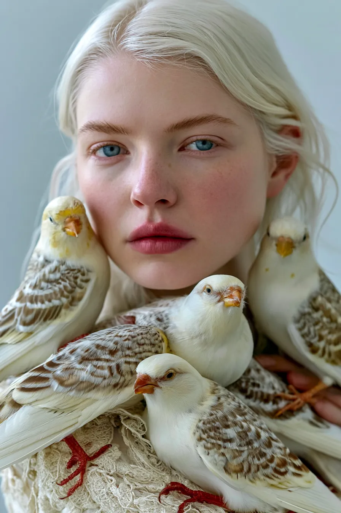
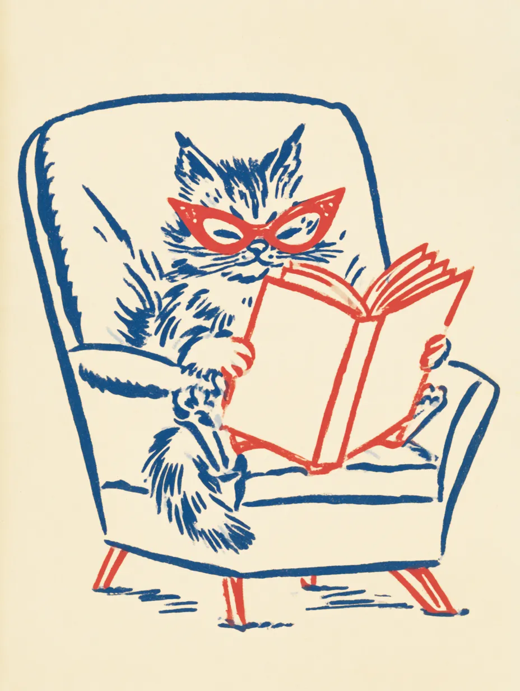
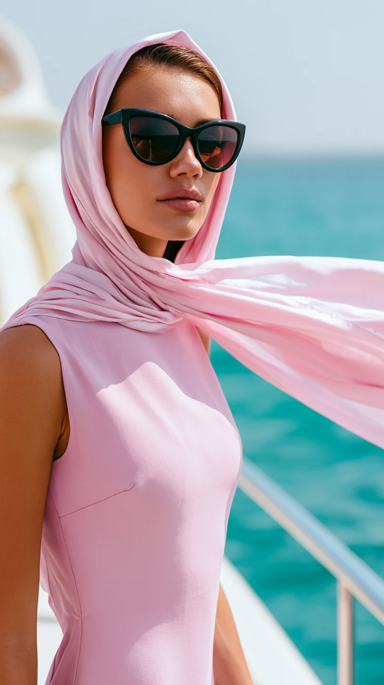
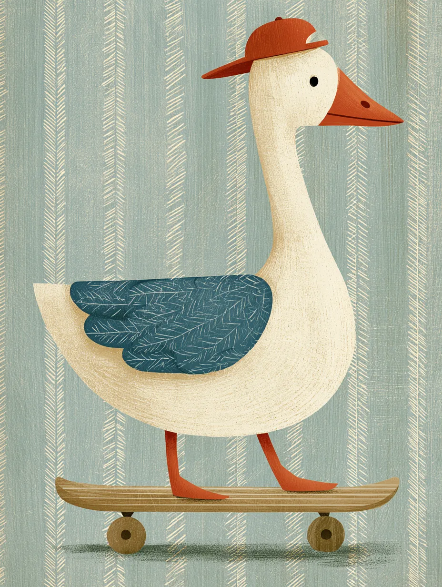
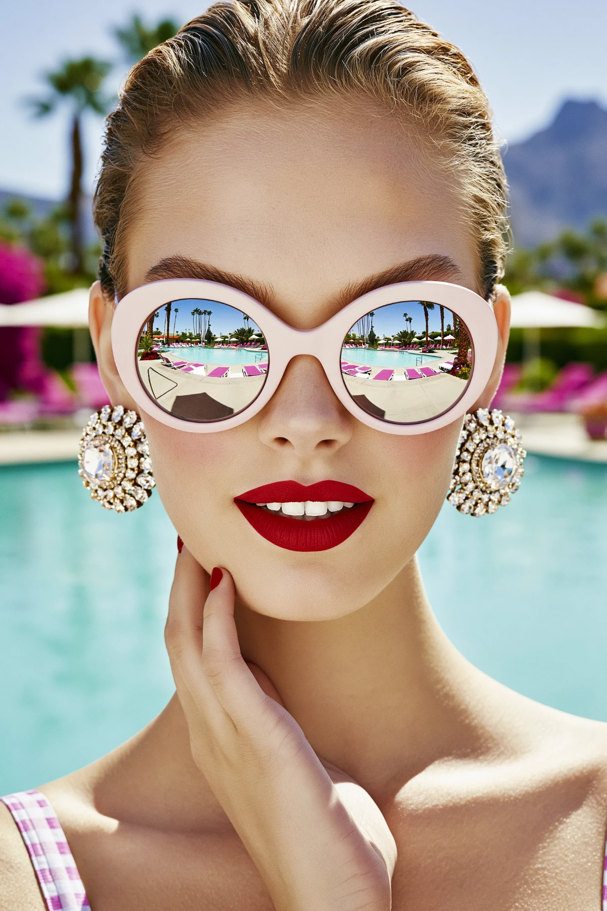

photo_wall
· personality 2 variants
masonry
错落网格（灰块）— staggered columns, varied photo heights
Maya Chen
Product designer · Berlin → Taipei

photo · 4:5 photo · 1:1
photo · 1:1
 photo · 3:4
photo · 3:4
 photo · 4:3
photo · 4:3

photo · 1:1 photo · 2:3
photo · 2:3

photo · 4:5 photo · 5:4
photo · 5:4
 photo · 3:4
photo · 3:4
 photo · 1:1
photo · 1:1
strip
横向条带（灰块）— horizontal scroll-snap row with captions
A year in frames — Maya Chen
scroll →
 photo · 4:3
photo · 4:3
taipei.studio
photo · 4:3
remote · 4 cities
 photo · 4:3
photo · 4:3
config.tpe

photo · 4:3tainan · 18 sessions

photo · 4:3v2.0 live
 photo · 4:3
photo · 4:3
studio · 12 people